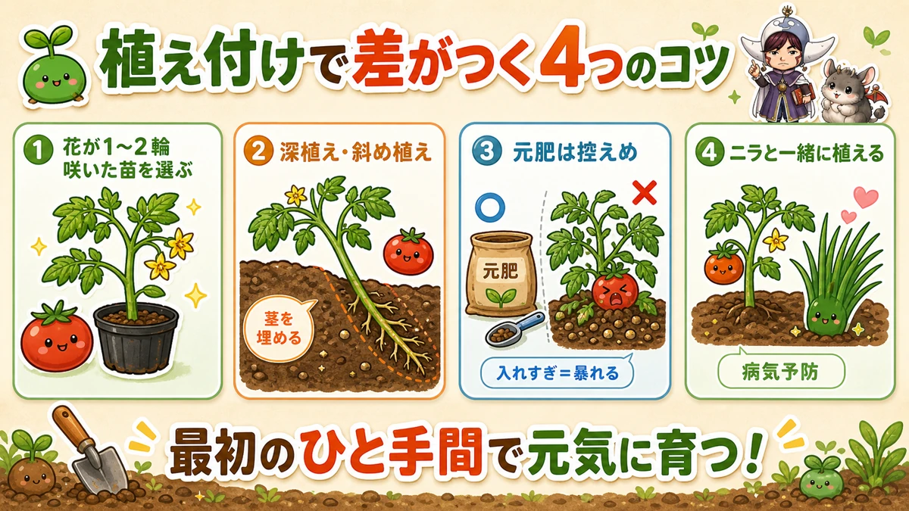
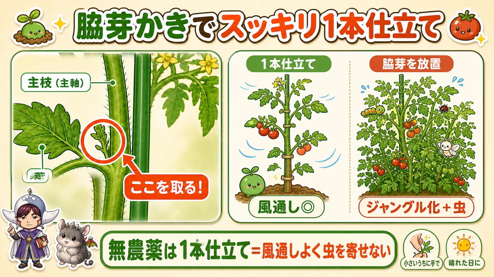
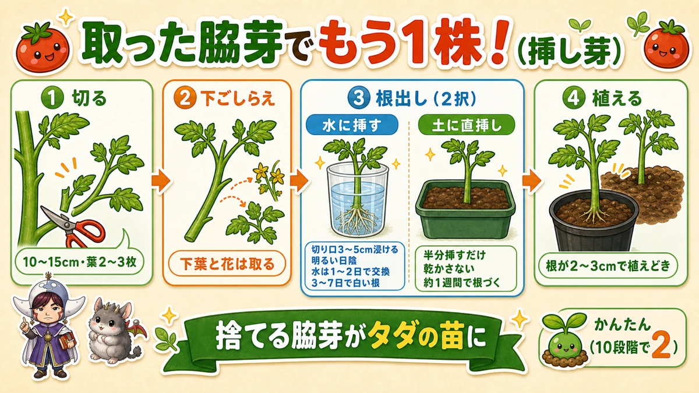
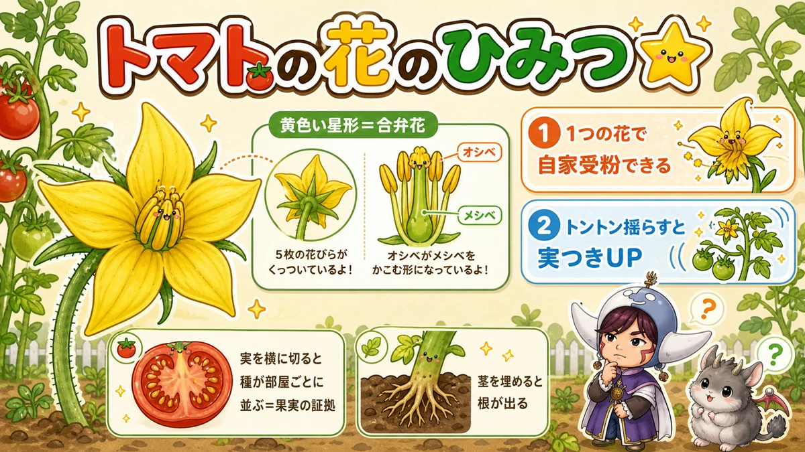

Tomatoes without sprays come down to one thing 🍅 Take the side shoots off

🍅 "It flowers and nothing sets."
🍅 "Pests get it straight away."
🍅 "Can you really grow tomatoes without spraying?"
Hello, I'm Eiko. Eight years of growing vegetables organically and without pesticides, and a teaching licence in science.
I don't use pesticides. "Tomatoes, without spraying?" — yes. Get the technique right and you get a crop.
① Choosing a plant, and planting it
For a first attempt, a medium-sized variety is a good choice. Large beefsteak types are more prone to disease and a little harder. Cherry tomatoes are easy too.
One tip on choosing: pick a plant with one or two flowers already open. Plant a tomato that's too young and it goes all leaf and stem and sets nothing — and there's a reason for that, further down.

What this diagram says （図解の文字）
- Four things that make the difference at planting
- ① "Choose a plant with one or two flowers open"
- ② "Plant deep, or at an angle" — "bury the stem"
- ③ "Go easy on the base fertiliser" — "too much = it runs wild"
- ④ "Plant garlic chives with it" — "disease prevention"
- Leave 3–4 years between potato-family crops. Tomato, aubergine, pepper and potato are relatives, and repeating them brings disease
- Plant deep, or at an angle. Bury part of the stem and it roots from there and grows stronger (why, below)
- Don't overdo the base fertiliser. Too much and a tomato "runs wild" and sets nothing. Start low and top up later
- Plant garlic chives alongside. Microbes on the chive roots suppress soil-borne disease such as bacterial wilt — a real ally when you're not spraying
② The single biggest technique: removing side shoots

What this diagram says （図解の文字）
- Side-shooting for one clean stem
- main stem ／ leaf ／ "take this out!"
- Single stem — "airflow ◎" ／ side shoots left on — "jungle, plus pests"
- "Without sprays, a single stem means air moves and pests don't settle"
- "While they're small, by hand" ／ "on a sunny day"
This is the important one. Growing tomatoes without sprays is decided here.
The shoots that appear between stem and leaf are side shoots, and removing them is side-shooting.
Without sprays I recommend a single stem — every side shoot removed, one straight stem. The reason is simple: to stop the foliage getting dense.
A jungle of stems and leaves means no air movement, which means shade and damp, which means somewhere for pests to live. I once left the side shoots on and ended up with a plant covered in shield bugs. Precisely because I don't spray, I keep it to one clean stem.
How
- Take them out small, by hand (secateurs once they're big — disinfected, ideally)
- Do it on a sunny day so the wound dries and disease can't enter
- But don't rush it in early growth, or right beside the growing point — you weaken the plant and spoil its shape
Root the shoots you remove — free plants

What this diagram says （図解の文字）
- Another plant from the shoot you took off
- ① "Cut" — "10–15 cm, 2–3 leaves"
- ② "Prepare" — "remove the lower leaves and any flowers"
- ③ "Rooting — two ways": in water — "cut end 3–5 cm under", "bright shade", "change the water every day or two", "white roots in 3–7 days" ／ straight into soil — "push it in halfway", "don't let it dry", "rooted in about a week"
The shoot you were going to throw away is a free plant. A tomato roots from its stem exceptionally readily, so cuttings take almost every time — difficulty about 2 out of 10. I increase my plants this way every year.
- Use a shoot 10–15 cm (4–6 in) long with two or three leaves. Too small is weak; too large is slow to root. Clean secateurs, or fingers
- Remove the lower leaves and any flowers or buds. Leaves that end up under water or soil will rot, and removing flowers concentrates the plant on rooting
- Stand it in a glass of water for an hour or two first. It takes far better than cutting and inserting straight away, and a limp shoot firms up again
Then root it — water or soil, both work well:
- In water (reassuring — you can see the roots): cut end 3–5 cm under, in bright shade, change the water every day or two. White roots in 3–7 days, and it's ready to plant when they're 2–3 cm long
- Straight into soil (quicker, less work): push it halfway into moist compost. Rooted in about a week; the only rule is not letting it dry out
Once rooted, pot it up or plant it out — keep it out of direct sun for the first three or four days and reintroduce the light gradually.
Cuttings take best in warm weather. And a plant struck late crops late — so it extends your tomato season.
③ Watering, and blossom end rot
Tomatoes tolerate dryness well, so they barely need watering. Overdo it and the flavour drops and disease follows. A rain cover over the top is ideal if you can manage one.
The common complaint is blossom end rot — the bottom of the fruit going black. It isn't a disease; it's a calcium disorder, and it also comes from letting the plant dry out or overfeeding nitrogen.
Wash and dry one eggshell and crush it finely → put it into 100 ml of vinegar (it fizzes) → leave a day, strain → dilute 100–300× and spray onto the leaves.
Eggshell you were going to bin, turned into fertiliser.
Science bit: the secret of the tomato flower 🔬
A question first: what colour is a tomato flower?
Yellow — and shaped like a star. People look at them every day and still can't answer.

What this diagram says （図解の文字）
- The secret of the tomato flower ☆
- "A yellow star = a fused-petal flower" — "five petals joined together"
- stamens — "the stamens form a tube around the pistil" — pistil
- ① "one flower can pollinate itself" ② "tap it and more fruit sets"
- "Cut the fruit across and the seeds are arranged in chambers — proof it's a true fruit"
Observation 1: take a flower apart
In the middle is a yellow tube, with the pistil hidden inside it. The petals are joined at the base — a fused-petal flower, like a morning glory.
The reveal
A tomato flower has both stamens and pistil, and can set fruit with its own pollen — self-pollination. So it doesn't need bees.
Which is why, when it flowers and nothing sets, tapping the flowers improves fruiting: the shake drops pollen and pollination proceeds.
Observation 2: cut a ripe one across
Slice it horizontally, not through the stalk. The seeds are arranged neatly in chambers — proof that the base of the flower swelled into the fruit. The cut face looks like a jewel.
Observation 3: dig up the buried stem
A while after planting, scrape gently at the buried stem. Roots are coming out of it, because a tomato stem carries cells already prepared to become roots. That's why deep and angled planting gives you more root.
To sum up
- ✅ Choose a plant with one or two flowers open, and plant it deep
- ✅ Garlic chives alongside for disease prevention
- ✅ Go easy on the base fertiliser — too much and it runs to growth
- ✅ The single biggest technique is one stem + removing side shoots, on a sunny day
- ✅ Root the shoots you remove — in water or straight into soil
- ✅ Water sparingly. Blossom end rot is calcium, not disease — eggshell and vinegar
- ✅ Tomato flowers are yellow stars and self-pollinating. Tap them and more sets
- ✅ A tomato stem is full of cells ready to become roots
Growing tomatoes without sprays sounds hard and isn't, once you know where the effort goes. Pick one fully ripe and eat it standing there — that flavour is the grower's alone 🍅
Thank you for reading!